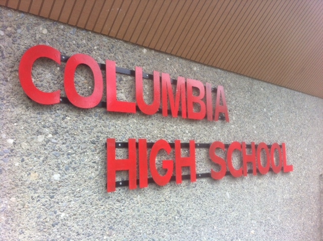
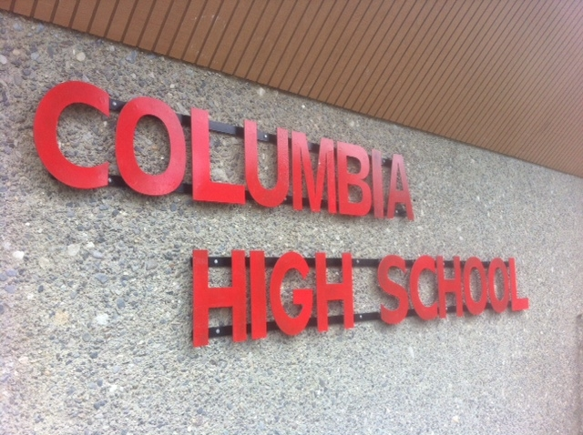
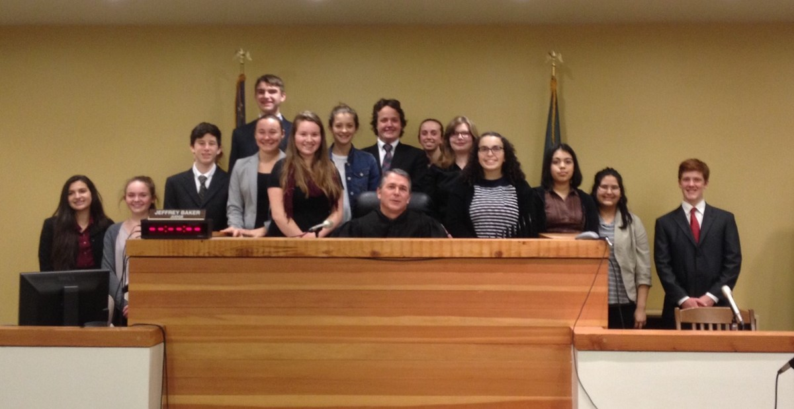
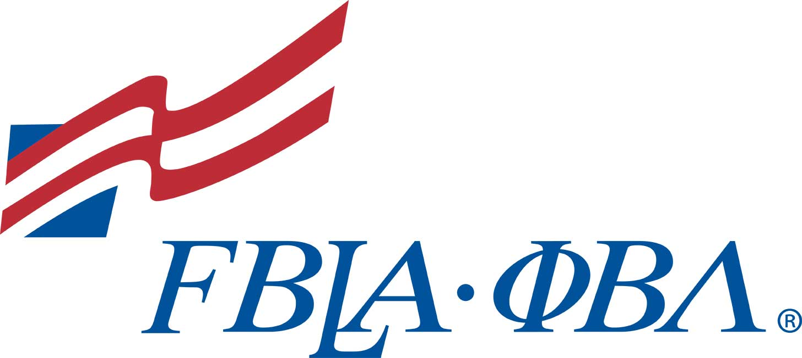
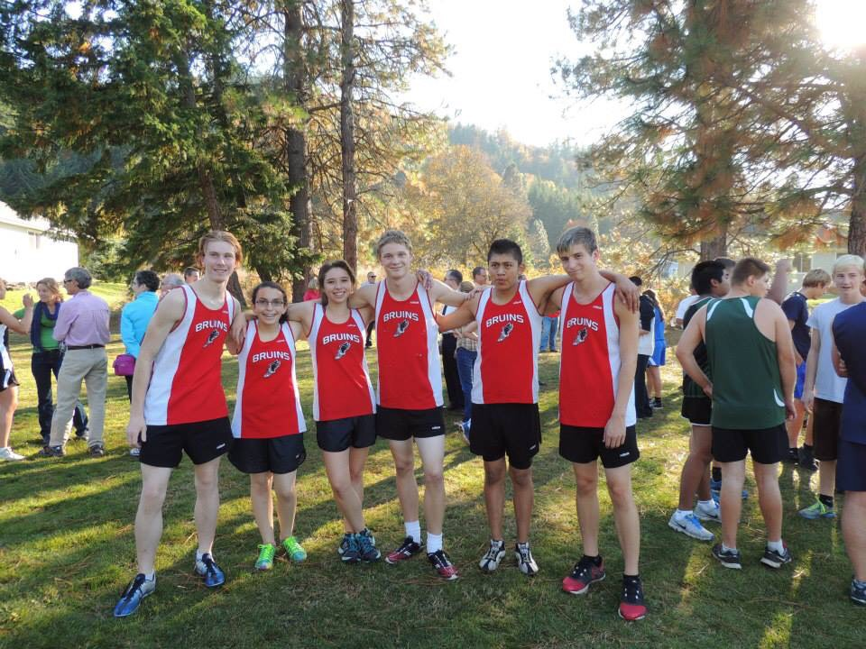

My name is Lily Schwarz, I'm 20 years old, and I'm from a small town in Washington state. As a current student at the George Washington University in Washington, DC, I have the opportunity to pursue a degree in science in an environment that will push me to make a positive impact on the world around me.
 

I attended Columbia High School in White Salmon, Washington from August of 2013 to June of 2017. I graduated second in my class.

As a junior in high school, I studied abroad in Taipei, Taiwan through Rotary Youth Exchange. I studied Mandarin Chinese while living with three different Taiwanese host families.

I competed with my high school's mock trial team as an attorney and a witness. We advanced to the state competition in 2014 and 2017.

As a member of Columbia High School's FBLA chapter, I took the role of Freshman Representative, Vice President, and Historian throughout my time in school. I competed in events such as mobile app development and economics.

As a senior in high school I dedicated my afternoons to being a teaching assistant in a middle school classroom. I noticed their lack of updated technology, so I wrote a grant for $4,000 worth of iPads, cameras, and software.
During my junior year abroad in Taiwan, I participated in two Model United Nations conferences. In the first, I represented the Russian Federation in the Taipei Youth Model United Nations and was voted best delegate. I finished off the year representing Canada in the Yale Taiwan Model United Nations conference.

As a sophomore in high school, I interned at a local tech startup called "PosterVents", an event app that displays event posters in areas all across the United States. I was the content and social media manager of the iPhone app.

As a freshman and sophomore in high school, I competed in cross country and track.
All throughout high school, I participated in Ski Club as a class representative. I helped organize multiple weekly ski trips for kids in grades 5-12.
During my high school career, I competed in varsity knowledge bowl. We studied random facts and competed against other high school teams.